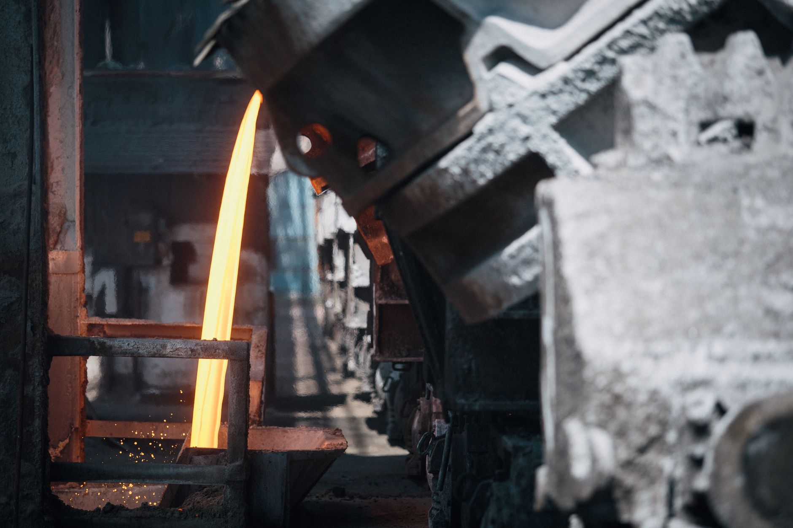

KEI·동아시아포럼 교차 분석, 韓 공급망 3대 구조 결함 실체

KEI(한국경제연구소)와 동아시아포럼은 2025~2026년 분석에서 한국 공급망 취약점으로 ①핵심광물·소재의 중국 단일 의존, ②삼성전자·SK하이닉스 등 소수 대기업으로의 생산 집중, ③정권 교체마다 반복되는 자원·산업 정책 공백을 공통으로 꼽았다. 한국의 갈륨 수입 중 중국산 비중은 통제 이전 기준 80% 이상, 게르마늄은 60% 이상이었다.
동아시아포럼은 한국이 '친공급망(pro-supply chain)' 전략을 채택해야 한다고 권고하며, 특정 진영이 아닌 공급망 네트워크 자체에 편입되는 실용 외교를 제안했다. 반면 NBR(미국 국가아시아연구소)은 한국의 균형외교가 미국의 핵심광물 파트너십(MSP)과 중국 소재 조달 사이에서 구조적 모순을 내재하고 있다고 지적했다.
산업부가 2025년 소부장 지원 대상을 6개 첨단전략산업 분야로 확대하고 예산을 1700억 원으로 늘렸지만, KEI 분석에 따르면 한국 소부장 기업의 R&D 집약도는 대만·일본 동급 기업 대비 여전히 15~20% 낮은 수준이다. 지원 예산의 절반 이상이 설비 투자에 집중되고 소재 원천기술 확보에 배분되는 비율은 30% 미만으로 추정된다.
한국의 공급망 회복력 지수(Supply Chain Resilience Index)는 KEI 기준 G20 국가 중 중위권으로, 일본(2019년 수출규제 이후 소재 국산화 집중 투자)과 대만(TSMC 중심 수직통합)에 비해 '집중도 대비 분산 역량'이 낮은 것으로 평가됐다. 특히 반도체 제조 장비의 일본·미국 의존도는 여전히 85% 이상이다.
세 기관의 분석이 공통적으로 짚는 핵심은 한국의 공급망 취약성이 '개별 소재 부족' 문제가 아니라 '시스템 설계 결함'이라는 점이다. 갈륨·게르마늄 국산화를 진행하는 동시에 제조 장비 85%를 미일에 의존하는 구조는 한 쪽 병목을 해소해도 다른 쪽에서 동일한 취약점이 재발하는 패턴을 만든다.
'친공급망 전략'이라는 개념은 진영 선택을 미루는 외교가 아니라, 복수의 공급망 네트워크에 동시에 편입해 어느 한 네트워크가 차단돼도 대체 경로가 작동하게 설계하는 실용 전략이다. 현재 한국은 미국 주도 MSP, 일본과의 소재 협력, 말레이시아 우회 루트를 병렬로 운용하기 시작했지만 세 경로 간 조율 기제가 없어 병목이 동시에 발생할 리스크가 남아 있다.
정책 연속성 문제는 수치로 나타난다. 한국은 2010년 희토류 파동 이후 '자원 외교 강화'를 선언했지만 정권 교체마다 예산·조직이 리셋됐고, 결과적으로 중국의 2023년 갈륨·게르마늄 통제를 맞닥뜨렸을 때 국내 비축량은 수요 기준 30일치에도 못 미치는 수준이었다.
공급망 분산 컨설팅·인증 서비스: KEI·NBR·동아시아포럼 같은 분석기관의 경고가 기업 구매 정책에 반영되기 시작하면, 공급망 리스크 평가·다변화 설계를 제공하는 전문 서비스 수요가 늘어난다. 국내에서는 삼정KPMG, 딜로이트 등이 이미 탄소·에너지·데이터 통합 공급망 평가 서비스를 확장 중이다.
말레이시아·인도 우회 공급망 허브: 한국 기업이 '친공급망 전략'을 실행하면 말레이시아 페낭, 인도 아삼 등 비중국 제조 거점에 대한 투자·협력 수요가 구체화된다. 이미 MIDA(말레이시아 투자개발청)가 한국과 AI·반도체 생태계 협력을 공식화한 상황이다.
단일 대기업 의존 소부장 납품사: 삼성·SK 등 소수 대기업에 매출 80% 이상을 집중한 소부장 중소기업은 대기업의 생산 차질이나 공급처 변경 시 동반 타격 위험이 크다. KEI가 지적한 '집중도 리스크'의 실질적 피해 집단이다.
정책 수혜를 기다리는 수동적 기업: 소부장 1700억 지원이 설비 투자 중심으로 집행되면 원천기술 없이 설비만 늘린 기업은 중국 생산단가 경쟁에서 구조적으로 밀린다. 지원금 수령 후 3~5년 내 수익성 악화 패턴이 반복될 수 있다.
기업 구매담당자는 KEI가 제시한 '집중도 지표'를 자사 소재 조달 구조에 적용해볼 필요가 있다. 단일 공급국 비중 65% 초과 품목을 먼저 뽑고, 그 중 중국 의존도가 높은 품목에 대해 2차 공급선 계약을 2026년 내로 체결하는 것을 목표로 설정해야 한다.
투자자 시각에서 '친공급망 전략' 수혜주는 진영 선택과 무관하게 복수의 공급망 네트워크에 부품·소재를 납품할 수 있는 기업이다. 국내 업체 중 미국 IRA·유럽 CRMA·일본 경제안보법 모두에 적합한 원산지 요건을 충족하는 소재를 생산하는 곳은 손에 꼽힌다. 이 교집합에 있는 기업이 향후 3년 프리미엄을 받는다.
실제 조달 현장에서는 — 2024년 하반기부터 글로벌 구매담당자들이 공급자 실사(Supplier Audit) 항목에 '중국산 원재료 비율'과 '비중국 대체 공급 가능 기간(lead time)'을 명시적으로 요구하기 시작했다. 한국 소부장 기업 중 이 질문에 문서로 답할 수 있는 곳은 20%가 채 안 된다. KEI·동아시아포럼의 경고가 실제 계약 조건으로 내려오는 시점이 이미 시작됐다는 뜻이다. 지금 당장 '우리 원재료의 중국산 비율이 얼마인가'를 정량화하는 작업부터 시작해야 한다.
이 포스팅은 쿠팡 파트너스 활동의 일환으로 수수료를 제공받습니다.